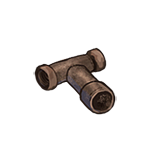

Получено: файл; исходный URL. Изображение подписано на странице-источнике; файл получен с зеркала. Совпадение с оригиналом не проверено. Страница: источник.
Труба
Мой Мир; историческая таблица, дата редакции не установлена- Тип
- нет данных
- Покупка
- 2 Зб; место покупки не указано
- Продажа
- 1 000 монет
- Как получить
- Произвести в Склепе (ВКонтакте, ZOMBIA; требует сверки).
- Применение
- Участвует в строительстве: Маяк Пирамида Мельница Замок Башня Бассейн Нефтяная вышка Флаг Беларуси Флаг России Флаг Украины
- Особенности
- нет данных
- Версия и дата
- Мой Мир; историческая таблица, дата редакции не установлена


Данные по источнику · Мой Мир · 20.06.2011
Предварительно: один источник; требует сверки. Требуется сверка.
- Покупка
- 2 зомбаксов (по источнику)
- Продажа
- 1 000 монет
- Применение
- Маяк, пирамида, мельница, замок, башня, бассейн, нефтяная вышка, флаги
Данные по источнику · ВКонтакте, ZOMBIA · 27 Июня 2011, 20:29; дата редакции не установлена
Предварительно: Данные одной исторической фанатской страницы; цифры и подписи изображений требуют сверки. Описание и условия сохранены по колонкам без додумывания.. Требуется сверка.
- Описание материала
- Труба 1000 монет 2 Зомбакса
- Участвует в строительстве
- нет текстовых данных; возможны неподписанные изображения
- Как достать
- Произвести в Склепе
- Участвует в создании
- нет текстовых данных; возможны неподписанные изображения
Данные по источнику · браузерная версия; платформа не указана · дата редакции неизвестна
Предварительно: Подписи и последовательность пиктограмм перенесены без автоматического толкования. Названия, цены и направления стрелок требуют визуальной сверки; возможны ошибки самого сайта.. Требуется сверка.
- Колонка 1 в порядке пиктограмм
- [подпись: Труба; файл truba.png] [подпись: Стоимость (Зомбаксов); файл zombucks.png] 2 [подпись: Продажа; файл moneta.png] 1000
- Колонка 2 в порядке пиктограмм
- [значок: proizvoditsya.png] [подпись: Склеп; файл sklep.png]
- Колонка 3 в порядке пиктограмм
- [значок: stroit.png] [подпись: Маяк; файл mayak.png] [подпись: Пирамида; файл piramida.png] [подпись: Волшебный Кролик; файл volshebny_krolik.png] [подпись: Мельница; файл melnica.png] [подпись: Замок; файл zamok.png] [подпись: Башня; файл bashnya.png] [подпись: Бассейн; файл basseyn.png] [подпись: Нефтяная Вышка; файл neftyanaya_vyshka.png] [подпись: Флаг Белоруси; файл flag_belorusy.png] [подпись: Флаг России; файл flag_rossii.png] [подпись: Флаг Украины; файл flag_ukrainy.png] [подпись: Флаг СССР; файл flag_sssr.png]
- Колонка 4 в порядке пиктограмм
- [значок: sosdanie.png] [подпись: Флюгер; файл fluger.png] [значок: strelka.png] [подпись: Модернизированный Университет; файл universitet-modern.png]
- Колонка 5 в порядке пиктограмм
Данные по источнику · браузерная Зомби Ферма / Зомби Мания; платформа требует проверки · дата URL не гарантирует дату редакции
Предварительно: Индивидуальная страница прочитана автоматически, подписи значков могут содержать ошибки; даты редакции и независимость от ЗомбиСити не установлены.. Требуется сверка.
- Основной блок страницы и подписи изображений
- Материал [иллюстрация: Труба] Труба Цена покупки: 2 [иллюстрация: Зомбаксы] Цена продажи: 1000 [иллюстрация: Монеты] Продать или купить Трубу можно в Обменке Зомби Фермы Трубу в Зомби Ферме сделать не сложно, ее даже можно накопать или наколдовать. Она часто применяется в строительстве зданий, по-этому запасы металла и шестерни не будут лишними. Трубу можно накопать Палочками-выручалочками под землей: Палочка-выручалочка [иллюстрация: Палочка-выручалочка] [иллюстрация: Стрелка] Подземный фонарь [иллюстрация: Подземный фонарь] Подземный фонарь [иллюстрация: Подземный фонарь] Трубу можно создать в Склепе: Труба [иллюстрация: Труба] = 1 Металл [иллюстрация: Металл] + 1 Шестерня [иллюстрация: Шестерня] [иллюстрация: Стрелка] Склеп [иллюстрация: Склеп] Труба участвует в создании материала: Флюгер [иллюстрация: Флюгер] = 10 Труба [иллюстрация: Труба] + 10 Проволока [иллюстрация: Проволока] [иллюстрация: Стрелка] Университет [иллюстрация: Университет] Флюгер [иллюстрация: Флюгер] = 10 Труба [иллюстрация: Труба] + 10 Проволока [иллюстрация: Проволока] [иллюстрация: Стрелка] Изумрудный университет [иллюстрация: Изумрудный университет] Труба нужна для перелета на Остров Лунный Ковром-самолетом: Ковёр-самолёт [иллюстрация: Ковёр-самолёт] [иллюстрация: Стрелка] Лунный [иллюстрация: Лунный] 3 Любовь [иллюстрация: Любовь] + 3 Мир [иллюстрация: Мир] + 1 Труба [иллюстрация: Труба] Труба участвует в строительстве некоторых построек: Ангар за зомбаксы [иллюстрация: Ангар за зомбаксы] Бассейн [иллюстрация: Бассейн] Башня [иллюстрация: Башня] Волшебный кролик [иллюстрация: Волшебный кролик] Замок [иллюстрация: Замок] Качели [иллюстрация: Качели] Маяк [иллюстрация: Маяк] Мельница [иллюстрация: Мельница] Нефтяная вышка [иллюстрация: Нефтяная вышка] Пирамида [иллюстрация: Пирамида] Школа [иллюстрация: Школа] Зомби-вертикаль [иллюстрация: Зомби-вертикаль] Флаг Беларуси [иллюстрация: Флаг Беларуси] Флаг Украины [иллюстрация: Флаг Украины] Флаг России [иллюстрация: Флаг России] Флаг СССР [иллюстрация: Флаг СССР] Флаг Казахстана [иллюстрация: Флаг Казахстана] Флаг Германии [иллюстрация: Флаг Германии] Мексиканский тоннель [иллюстрация: Мексиканский тоннель] Печка [иллюстрация: Печка] Казино [иллюстрация: Казино] Библиотека [иллюстрация: Библиотека] Доступ [иллюстрация: Доступ] Изумрудный маяк [иллюстрация: Маяк-призрак] Маяк-призрак [иллюстрация: Маяк-призрак] Ужасный маяк [иллюстрация: Ужасный маяк] Флаг Великобритании [иллюстрация: Флаг Великобритании] Флаг Франции [иллюстрация: Флаг Франции] Флаг Узбекистана [иллюстрация: Флаг Узбекистана] Флаг Бразилии [иллюстрация: Флаг Бразилии] Флаг Италии [иллюстрация: Флаг Италии] Загадочная лодка [иллюстрация: Загадочная лодка] Флаг Аргентины [иллюстрация: Флаг Аргентины] Флаг Мексики [иллюстрация: Флаг Мексики] Флаг Кореи [иллюстрация: Флаг Кореи] При копании Лопатами, иногда можно выкопать Трубу: Груда тыкв [иллюстрация: Груда тыкв] Праздничная ель [иллюстрация: Праздничная ель] Синий клеверок [иллюстрация: Синий клеверок] Синий [иллюстрация: Синий] Изумрудная арка [иллюстрация: Изумрудная арка] Изумрудная арка [иллюстрация: Изумрудная арка] Изумрудный забор [иллюстрация: Изумрудный забор] Изумрудный забор [иллюстрация: Изумрудный забор] Видео - Копаем Трубу лопатами под Забором в снегу: Видео - Добываем Трубы палочками под землей:
Данные по источнику · браузерная игра; социальная сеть не указана · 27.03.2015 — дата публикации или URL; дата последних правок неизвестна
Предварительно: Фанатские источники могут быть зависимыми; сверены только отмеченные факты, вероятности и актуальность не подтверждены.. Требуется сверка.
- Рецепт и цена
- FatalGame указывает Склеп, одну шестерню и один металл, а также цену 2 зомбакса; ингредиенты совпадают с карточкой Склепа по Narod, цена — с ZOMBIA. Количество выходящих труб эта статья не уточняет.
- Получение и применение
- Автор называет некоторые декорации и задания, а среди применений — Нефтяную вышку, Маяк и перелёт на Лунный остров. Список и доступность могут зависеть от версии.
Текст источника без реконструкции
Участвует в строительстве: Маяк Пирамида Мельница Замок Башня Бассейн Нефтяная вышка Флаг Беларуси Флаг России Флаг Украины
Связанные сущности
- Школа — упоминается в стадиях или производстве Школы
Источники
- Таблица материалов — zombiemail.do.am; изображения таблицы с zombi.at.ua, авторство текста не установлено
- ZOMBIA: прочитана индивидуальная карточка; 27 Июня 2011, 20:29
- Каталог материалов: строка и подписи значков
- Zombie-island.moy.su: прочитана отдельная статья
- FatalGame: отдельная статья, выборочная сверка